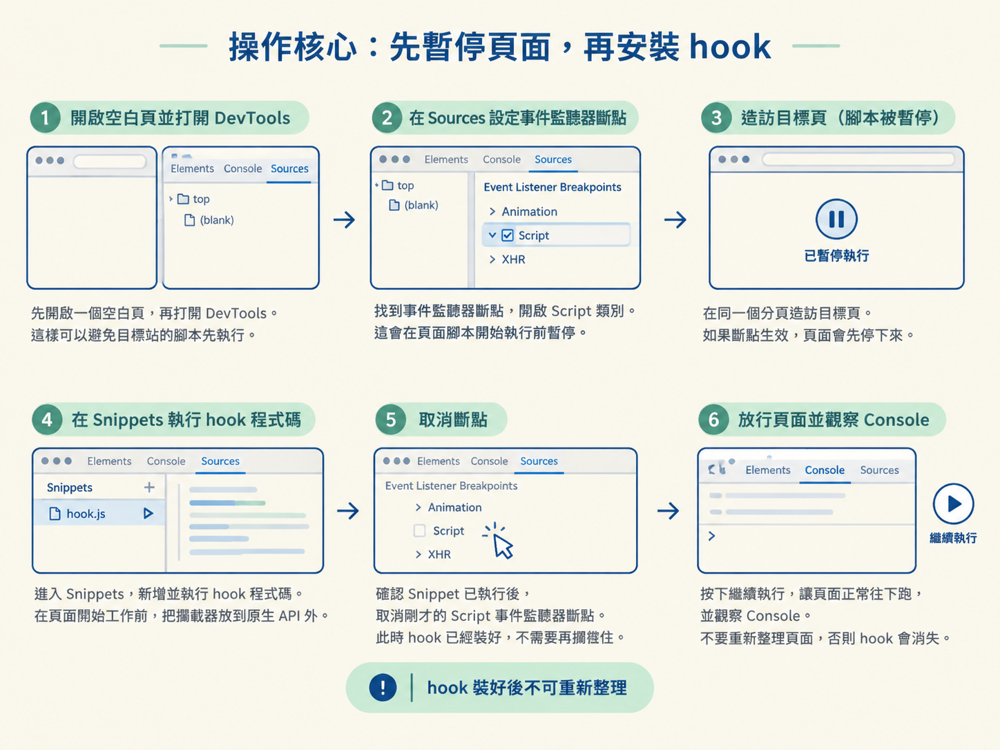
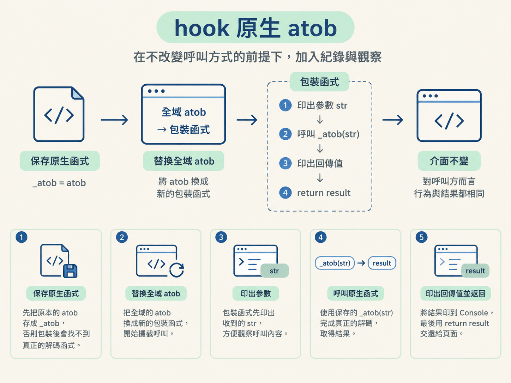
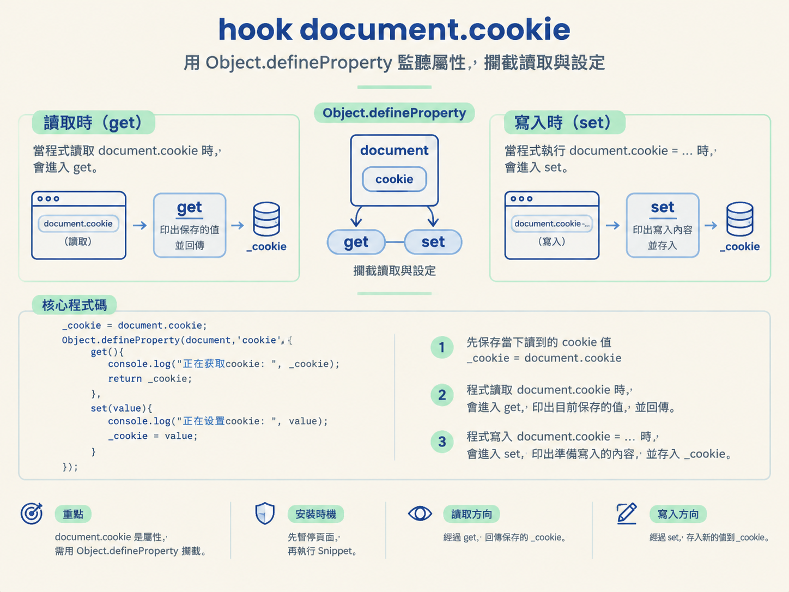

atob 與 document.cookie你會在目標頁面的程式碼開始執行前，先把瀏覽器原生的 atob 與 document.cookie hook 起來。完成後，只要頁面呼叫 atob，或讀寫 document.cookie，Console 就會留下參數、回傳值或設定內容。
前置條件：你已經知道如何在 DevTools 設定斷點、使用事件監聽器斷點，也理解上一節「先保存原函式，再換上包裝函式」的基本做法。
分析目標站時，通常會先觀察頁面送出與接收了哪些資料。遇到經過編碼、解碼或 cookie 加工的內容，再進一步追蹤資料是怎麼產生的。
hook 就像在資料必經的門口架設攝影機。與其從大量原始碼裡猜哪一行處理了資料，不如先攔住 atob 或 document.cookie，直接看看頁面餵了什麼進去，又拿到了什麼結果。
這個方法適合用來縮小搜尋範圍，但不是所有頁面都會使用這兩個 API。若放行後完全沒有紀錄，可能不是 hook 失敗，而是目標程式根本沒有走這條路。
這次最重要的不是新語法，而是操作時機。原生 API 很可能在頁面初始化時就被呼叫。如果等頁面全部跑完，才在 Console 貼上 hook，最早也最關鍵的呼叫可能早已溜走。
接下來請按照順序操作。特別注意：hook 裝好後不要重新整理，否則目前文件會被換掉，剛安裝的 hook 也會一起消失。
先開啟一個空白頁，再打開 DevTools。
從空白頁開始，可以避免目標站的腳本在你準備好之前先執行。
進入 DevTools 的 Sources 面板，找到事件監聽器斷點（Event Listener Breakpoints），並開啟 Script 類別。
這個斷點會讓瀏覽器在頁面腳本開始執行前暫停，替你留出安裝 hook 的空檔。
在同一個分頁造訪要分析的目標頁。
如果斷點正確生效，頁面執行會先停下來，而不是直接完成載入。
進入 Sources 面板的 Snippets（程式碼片段），新增並執行 hook 程式碼。
這一步是在頁面開始工作前，先把攔截器放到原生 API 外面。
確認 Snippet 已經執行後，取消剛才的 Script 事件監聽器斷點。
hook 此時已經裝好，不需要再讓每段腳本都被這個斷點攔住。
按下繼續執行，讓頁面正常往下跑，並觀察 Console。
不要重新整理頁面。重新整理會建立新的文件環境，剛才執行的 hook 也會消失。

atobatob 是瀏覽器內建的 base64 解碼函式。當目標頁把編碼後的字串交給它時，我們可以在呼叫前後各留下一筆紀錄。
把以下程式碼放進 Snippets，並在頁面仍處於暫停狀態時執行：
_atob = atob;//保存原函数
atob = function (str){
console.log("正在执行atob方法, 参数:", str);
let result = _atob(str);
console.log("正在执行atob方法, 返回值:", result);
return result;
}第一行 _atob = atob 先保存原生函式。這一步不能省略，否則包裝後的 atob 就找不到原本負責解碼的函式。
接著，全域的 atob 被換成新的包裝函式。它先印出收到的 str，再呼叫保存下來的 _atob(str) 完成真正的解碼。
取得結果後，程式會把回傳值印到 Console，最後再用 return result 交還給頁面。對目標程式來說，呼叫方式與結果都沒有改變，只是中途多了一層觀察紀錄。

atobatob。如果目標頁使用的不是原生 atob，而是自己實作的解碼函式，這個 hook 就不會留下紀錄。此時不要一直重裝同一段程式碼，應該回頭確認資料實際經過哪個函式。
document.cookiedocument.cookie 不是函式，而是屬性。因此不能直接套用函式包裝，而要用 Object.defineProperty 攔截讀取與設定。
其中 get 會在程式讀取屬性時執行，set 則會在程式寫入屬性時執行。安裝時機與前面的 atob 相同：先暫停頁面，再執行 Snippet。
_cookie = document.cookie;
Object.defineProperty(document,'cookie',{
get(){
console.log("正在获取cookie:", _cookie);
return _cookie;
},
set(value){
console.log("正在设置cookie:", value);
_cookie = value;
}
});_cookie = document.cookie 先保存當下讀到的 cookie 值。
之後，只要頁面讀取 document.cookie，就會進入 get。程式會把目前保存的值印出來，再將它回傳。
當頁面執行 document.cookie = ... 時，則會進入 set。這時 Console 會顯示準備寫入的內容，並把它存進 _cookie。

這段document.cookie範例偏向觀察示範。它把讀寫導向_cookie變數，並不是在保留瀏覽器原有 cookie 行為的前提下單純加上紀錄。
因此，若你的目標只是確認「哪段程式試圖讀寫什麼內容」，這個寫法很直觀。若頁面後續流程必須依賴真實的 cookie 狀態，它就可能影響頁面行為，不適合直接當成完全透明的 hook。
分析時要留意這項取捨：攔截器雖然讓資料流變得清楚，卻也可能成為實驗中的變因。看到頁面行為改變時，不要立刻認定那是網站原本的邏輯，先檢查是否由 hook 本身造成。
在頁面跑完後才安裝 hook，並不是完全沒用。它仍然能攔到安裝之後發生的呼叫，適合分析按鈕點擊、表單送出等稍晚才觸發的流程。
但如果要追的是頁面初始化階段，這樣就太晚了。原生 API 可能在第一批腳本中立刻被使用，等你打開 Console 時，關鍵資料早已通過。
Script 事件監聽器斷點的作用，就是把時間軸拉回頁面腳本執行之前。先讓瀏覽器停住，再安裝 hook，就有機會從第一次呼叫開始記錄。
讓頁面繼續執行後，先看 Console 是否出現預期紀錄。
atob，應該會看到一筆參數紀錄，以及一筆回傳值紀錄。document.cookie，應該會看到目前取得的內容。document.cookie，應該會看到它準備寫入的值。如果 Console 完全沒有輸出，依序檢查以下三件事：
atob 或 document.cookie。前兩項是操作時機問題，重新從空白頁開始即可。第三項則代表你攔錯入口，應回到實際資料流，尋找真正負責處理資料的函式或屬性。
頁面在第一段腳本執行前先被暫停；你在 Snippets 裡裝好 hook，取消 Script 事件監聽器斷點，再讓頁面繼續執行。之後，atob的輸入與輸出會出現在 Console，而document.cookie的讀寫也會留下紀錄。整個過程中不能重新整理頁面。
這套程序的重點是「搶在第一次呼叫之前」。函式使用「保存原函式、換上包裝」；屬性則使用 Object.defineProperty 的 get 與 set。至於網站如何偵測函式被換過，以及如何處理 toString 檢查，會留到下一節繼續拆解。